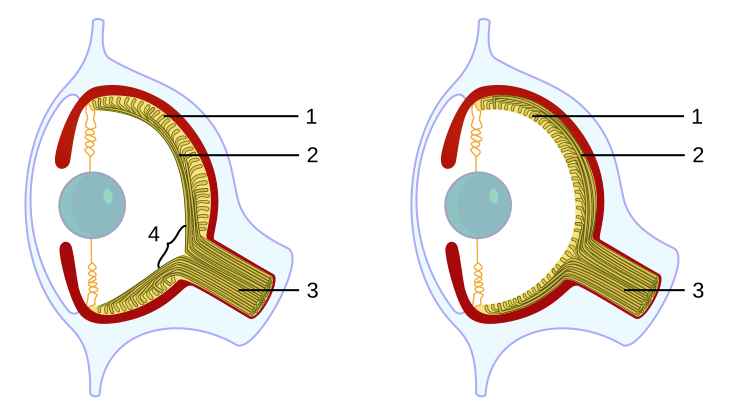
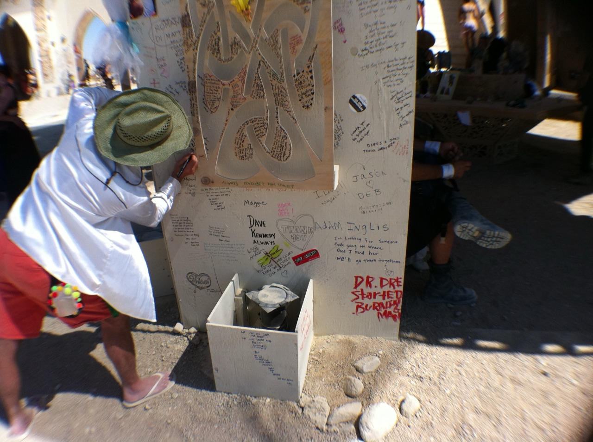

The engine
Two men in Akron built a religion by accident
In 1935, in Akron, Ohio, two men who could not stop drinking built something shaped exactly like a religion. They were not trying to.
It had confession, making amends, surrender, a core text, and a room full of people who showed up every week. The one thing it never pinned down was God. You got to decide for yourself who, or what, you were praying to.
Dr. Bob's House, Akron. Photo by Nyttend, released to the public domain, via Wikimedia Commons.
{kind=link}
They did not start from nothing.
It came out of the Oxford Group, a popular Christian movement of the day built on confession and surrendering your life to God. In 1934 a newly sober member named Ebby Thacher carried its message to an old drinking friend, a New York stockbroker named Bill Wilson. Bill joined the group and got sober within weeks. The next year he met Dr. Bob Smith, an Akron surgeon who had been going to the same meetings for two years and still could not stop drinking. AA history Talking with Bill is what finally got Dr. Bob sober, and a few years later the thing the two of them built broke away from the Oxford Group. They did not invent a religion from scratch. They took an inherited one and boiled it down, keeping what worked and cutting what they could not use.
What makes this rare is that we can watch it happen. The dates are known, the writing survives, and people who were in the room are still alive.
It got boiled down under brutal pressure. It had to work for people whose lives were on the line, drinkers who would relapse, and some of them die, if it let them down.
So it kept only what actually worked. That test is the key to everything that follows.
Which sets up the one question this piece is about. Put 500 children on an island with no religion handed down, no gods, no scripture, no holy book of any kind, and come back in 200 years. Would they have built a faith of their own?
They get everything else: each other, language, the whole island, two centuries to fill. The only thing taken away is a religion to inherit. That is the only condition the question needs.

Uninhabited Henderson Island, South Pacific, from the International Space Station. NASA, public domain.
{kind=link}
The reveal
Everyone guesses the wrong parts
You have probably heard a rougher version of this bet. Comedians like Ricky Gervais love it: burn every book on Earth, and in a thousand years the science books come back exactly the same, while the holy books come back totally different, or not at all. the bet Agree with all of it. Then look at the half of that sentence everyone skips: something always grows back, it is just never the same something. That something is what this piece is chasing. The question is old. A philosopher in the 1100s wrote a story about a child raised alone on an island who reasons his own way to God. Hayy We are asking a smaller, more answerable version. Not which god they land on. What shape.
First, clear out two assumptions. One: plenty of people who tick "no religion" on a survey still believe in some higher power or spiritual force, though how many varies a lot by country. Pew Two: the idea that a religion needs one holy book is mostly a Christian, Jewish, and Muslim thing. Plenty of traditions run on practice instead, and some have no text at all.
Picture it for a second. If religion really is something every group of humans builds, you could almost name what the island kids end up with before we check a single fact. No need to write anything down, just notice the first few things you reach for.
Here is what the evidence actually supports. Cut-off groups land on the same structure, not the same beliefs.
The things that show up almost everywhere are few, and humbler than what you would picture. A sense that unseen spirits are in things. Group ritual. Usually someone whose job is to tend it, and usually some careful way of dealing with the dead. At the size of 500 people, this is not temples and priests. It is one person who slips into a trance to heal, spirits felt in the weather and the trees, and a dance on a moonless night. The big pyramids and the calendars come later, once there are crowds. foragers
Almost everyone reaches for the specifics first: a particular god, heaven, prayer. Those are exactly the things real religions fight each other over, along with a savior, sin, and sacred law. None of them make the universal cut.
So anything specific enough to argue about is the part that changes from place to place. The parts that show up everywhere are the ones you would skip right over, because they feel too obvious to mention.
The universal parts of religion are the parts nobody preaches about.
A harder admission. Even the inner feeling you might assume is universal, that the self is the main problem and surrender is the cure, is not. It came later and in fewer places, and we are about to meet the tradition that flat-out rejected it.
So the skeleton is universal and the beliefs are local. That is a big claim, which means it had better show up out in the real world, not just in a thought experiment.
The mechanism
The youngest children give it away
We do not have to wait the two hundred years. Psychologists have run pieces of this experiment on children who were never taught the answer, and the children keep tipping their hand.
Start with the dead. In one study a puppet alligator eats a mouse, and the children are asked what is still true of it. The great majority of the youngest, three to five years old, correctly say its brain has stopped working. Then they say it is still hungry, still wants to go home, still loves its mother. dead mouse
The body stops, and the mind, they feel, does not. The part that should not happen if this were simply taught: the belief is strongest in the youngest and fades as they grow. The afterlife is not poured in. It is the starting intuition that culture later prunes back.
Chart drawn after J. M. Bering and D. F. Bjorklund (2004), the developmental emergence of afterlife reasoning. Schematic, direction faithful to the finding.
Now the world outside the body. Ask young children why rocks are pointy and many will tell you it is so animals will not sit on them. Mountains, rivers, clouds, they tend to treat the whole of nature as made on purpose, for something. The researcher who found this calls them intuitive theists. teleology It turns up in officially atheist China too, so it is not a Sunday-school habit.
It is not something we outgrow so much as learn to override. Press professional physical scientists for a fast answer and they slide back into it, endorsing that trees make oxygen so that animals can breathe at nearly double the rate they do at leisure. scientists The default is never deleted. It is only sat on.
The ritual has a visible root too. Show a child a box opened with a few useful moves and a few pointless ones, a tap on the lid, a wave of the hand, and the child copies all of it, the useless steps included. A chimpanzee, who can see the steps are useless, drops them. overimitation We are the animal that copies the whole procedure on faith, which is the only way a rite survives a generation intact, and Kalahari children do it exactly as readily as children in a lab.
Belief runs downhill, as one cognitive scientist put it. It is the path of least resistance for the minds we already have, and disbelief is the effortful work against the grain. Boyer
The skeleton is not preached into them. It is the shape the mind takes when nobody is steering.
Now the strongest argument against everything I just said. Raise one single child with no culture at all, the cognitive scientists Konika Banerjee and Paul Bloom argue, and you would not get God out the other end. Tarzan The mental biases are raw material, not a religion, and a real creed needs a culture to grow in.
That is right, and it is the whole reason the island has five hundred children and two centuries, not one feral child and an afternoon. The biases supply the shape. The crowd and the years supply the rest. Their gods will be their own invention. The reaching for one was packed before they sailed.
Isolation
The experiment already ran, at planetary scale
It already ran once, across half the planet. People walked into the Americas and then grew up completely cut off from everyone else for more than ten thousand years. peopling
When the two halves of humanity finally met again in 1492, both sides had temples, priesthoods, ritual sacrifice, ceremonies for their ancestors, and beliefs about what happens after you die. The same basic setup, built twice, with no way to copy from each other.
Left: Pyramid of the Sun, Teotihuacan by Mario Roberto Durán Ortiz, CC BY-SA 4.0. Right: the Parthenon, Athens, public domain. Both via Wikimedia Commons.
{kind=link}
{kind=link}
On one side of the ocean: stepped pyramids and a priest-run calendar in Mexico, and in the Andes, mummified ancestors who were fed, dressed, and carried out to be asked for advice as if they were still alive. Andean mummies On the other side of the world, the same jobs being done under different names, for different gods.
A few honest caveats. Norse sailors did reach Newfoundland around 1000 AD, the case for later Polynesian contact is real but debated, and the Americas were never one single religion. contact They held thousands of them.
That sprawl is the point, not a problem. The specific beliefs went off in every direction, while the same underlying frame kept showing up.
And neither side actually started from zero.
Both inherited the same basic human kit: the same hands, and the same brain wired to read other people's minds and to see intent behind events. So this is not a clean blank-slate test. It is two branches of humanity building on one shared inheritance. Even so, they built the same structure.
That is the experiment at planet scale. It has also run small.
Small and fast
We have run this smaller, and faster
The planetary case is grand but slow, and nobody alive watched it happen. There are smaller runs you can almost watch, much closer to the size of the island.
Put children alone on an island and the story everyone reaches for is Lord of the Flies, the slide into savagery. It happened for real once. In 1965 six boys from a Tongan boarding school were marooned on the rock of Ata for fifteen months. Ata They did not come apart. They split the work in pairs, kept a fire burning for more than a year, settled quarrels with a forced timeout, and began and ended each day with song and prayer.
The honest catch: they were schoolboys who carried their faith out there with them, so this is structure held together under pressure, not invented from nothing. But strip away the church and the school, and the kids rebuilt the rhythm at once, the singing, the prayer, the sacred fire they never let go out, from whatever they already had in their heads.
For invention closer to scratch, look at Tanna, in Vanuatu. Within roughly a decade either side of the war, a new religion assembled itself there in plain sight, around a figure called John Frum: prophets, a holy day, sacred red crosses, and men who still drill in formation waiting for him to come back. John Frum It grew its own specialists and its own calendar, and it is kept today, long after the wartime cargo that sparked it stopped arriving. Asked why he had waited nineteen years for John with nothing to show, one man said Christians had waited two thousand for Christ.
John Frum ceremonial cross, Tanna by Tim Ross, 1967, CC BY 3.0, via Wikimedia Commons.
{kind=link}
And for children building real structure from nothing, the cleanest case is not on an island at all. When deaf children in Nicaragua were first gathered together in the late 1970s with no shared language, they made one. Nicaragua Inside a decade they had a full grammar, and it was the youngest children, not the adults, who built its deepest parts. Put enough young minds in a room with a blank where a system should be, and they fill it.
Order in days, a language in a decade, a faith inside one lifetime. The blank never stays blank.
None of these is the clean experiment. The boys ran on a faith they carried, and Nicaragua built a language, not a creed. But the boys show the rhythm returns at once, Nicaragua shows children invent deep structure on their own, and Tanna shows a whole religion can assemble in a decade from the parts lying around. Lay them end to end and the two-hundred-year island looks like the easy case, not the hard one.
That is all scaffolding, though. What about the inner content, the diagnosis of what is actually wrong with us?
The dissenter
The tradition that would not surrender
One ancient religion broke that inner pattern completely. Zoroastrianism, the old faith of Persia, has a set of founding hymns called the Gathas, and they never once tell you to surrender. Gathas Their whole world is a war: truth against the Lie, order against the chaos eating away at it.

Faravahar relief, Persepolis by Napishtim, CC BY-SA 3.0, via Wikimedia Commons.
{kind=link}
It tells you to fight. The great sin it names is deceit. Not the proud, grasping ego that so many later religions treat as the enemy, but lying itself. Pick truth, fight the Lie, take a side. That is a genuinely different theory of what is wrong with people, not a different accent on the same one.
Take it as the best evidence that the inner beliefs never converged. Different religions really do disagree about what is broken in us. That is exactly why the frame is the part that repeats, and the beliefs are not.
Now a twist. This religion is tiny today, maybe a hundred and ten thousand people left. demographics
But it may have planted some enormous ideas that later spread across the Near East: heaven and hell, a final judgment, a cosmic enemy (the devil), and a savior still to come. Those same features show up later in Judaism, then Christianity, then Islam. The link is genuinely debated, and nobody is sure exactly when the Gathas were composed. eschatology
Follow that out. If those ideas all flowed from one source, then the famous agreement between Judaism, Christianity, and Islam is not three separate witnesses backing each other up. It is one witness, quoted three times.
Which means the real question is not what religions share. It is how you count them.
The frame
Nobody calls a squid eye a human eye
The right way to think about this is not that all religions are secretly one religion. The biologists have a better name for it: convergent evolution.
Take eyes. Basic light-sensing eyes evolved on their own dozens of separate times. The camera eye, the kind you are reading this with, got built from scratch at least twice: once in our line, and once in the squid's. eye evolution A squid eye and a human eye do the same job by totally different routes, and no biologist calls them the same eye.

Vertebrate (left) and octopus (right) eye by Caerbannog, CC BY-SA 3.0, via Wikimedia Commons.
{kind=link}
Religion is a slot humans keep refilling, not one truth wearing a hundred disguises.
And the part that complicates even that. Both of those eyes get switched on in the embryo by the very same ancient gene, inherited from a shared ancestor far too simple to have eyes at all. Pax6 Different on the surface, the same underneath. Separated cultures are just like that: free to differ up top, all running on the same human brain down below.
The frame has to cover the ugly stuff too. Human sacrifice grew up on both sides of the ocean, with no contact between them. Convergence predicts the grim repeats just as easily as the beautiful ones. A single loving truth behind all religions cannot explain the altars at all.
There is a real fight among scholars here. One camp (call them the perennialists, like the writers Aldous Huxley and Huston Smith) said all the great traditions are climbing toward the same summit. Critics like Stephen Prothero fired back that what they teach differs far more than the thin patch they share. Prothero
And how you count matters. Related scriptures are not independent witnesses. The Bible, the Quran, the Book of Mormon, and yes, AA, are all one family tree. The Sikh and Baha'i scriptures openly blend earlier ones. They are new branches of the same family, not fresh voices from outside it.
The witnesses that actually count are the family trees with no shared root that still landed on the same skeleton: the Indian, the Chinese, and the Native American traditions, set against the Near Eastern one. Count it that strict way and the overlap shrinks rather than grows, which is exactly why the little that does overlap is worth taking seriously.
A claim this loose deserves a fair challenge. Once you subtract the beliefs, is the leftover skeleton just the word "religion" stretched over any group of humans? A football crowd has its rituals and its priests too. So let me say plainly what would prove me wrong. It is not having a community, or a hierarchy, or big shared feelings. It is one specific, less obvious bundle: a careful way of handling the dead, a way of dealing with unseen spirits, and someone set apart to tend it. Find a society with thriving sports and politics and none of that, and the claim sinks.
The closest thing to that society on record is contested, but worth meeting. According to the linguist who lived with them for years, the Piraha people of the Amazon have no creation story, no gods, and no word for God, and they actually turned their own missionary into an atheist. Piraha And yet they are surrounded by spirits that walk out of the forest to warn them and boss them around, and the whole village will line up on the riverbank to watch one. They dropped the beliefs and kept the structure. Even the hardest case to find is not a clean miss.
Isolation was one way to test all this. The last century ran a very different one.
Deletion
They banned the gods, and something grew back
In the twentieth century, several governments tried to delete religion outright, by force: the Soviet Union, Albania (which started enforcing state atheism in 1967 and bragged that it was the world's first atheist state), China during the Cultural Revolution, and the Khmer Rouge in Cambodia. Albania
The queue at Lenin's Mausoleum, Moscow, 1969. Fortepan / Pohl Pálma, CC BY-SA 3.0, via Wikimedia Commons.
{kind=link}
What grew back was either the old religion returning, or brand-new things cut to the exact same pattern. An embalmed leader kept like a holy relic, filed past in a slow line. Sacred texts and parades. Heresy, confession, and public self-criticism. One man's face hoisted into the empty seat at the top.
The vocabulary changed and the furniture stayed. A canon, a clergy of officials, holy days, relics, and a doctrine you could be punished for doubting.
But be precise about what actually came back, because it complicates the easy story. Where the buried faith was Orthodox, it surged. Russian Orthodox identification climbed from about a third of the country in 1991 to roughly three quarters two decades later. Pew But where the pressure fell hardest and longest, belief stayed dead. East Germany is about the least religious population ever measured. A majority there say they not only do not believe in God, they never did. ISSP
That is the sharper finding, not a hole in the argument. The belief did not refill, but the slot did. The state had pushed a secular coming-of-age rite, the Jugendweihe, to replace church confirmation, a public vow with speeches and flowers and no god in it. It outlived the state that built it. Around a third of eastern German teenagers still pass through it, more than are confirmed in the churches. Jugendweihe
Ban the gods and the rites grow back, sometimes with the state in the empty chair, sometimes as a vow with no god left in it at all.
Convergence predicts exactly this. A blank, religion-free future does not.
Force was one way to test all this. Freedom is another, and it gives the same answer.
No one forcing it
The people rebuilding it on purpose
That was the slot getting refilled under force. The stranger evidence is the same slot filling back in with nobody forcing anything at all, among people who walked away from religion and then went looking for the shape again on their own.
Every summer in the Nevada desert a crew raises a wooden temple the size of a cathedral. For a week it fills with photographs, letters, and the ashes of the dead, left by strangers who share no creed. Then, at a festival famous for its noise, they burn it in total silence. the Temple Nobody set out to build a rite for the dead. They built one anyway, because the hole was there.

Messages at the Burning Man Temple by Victor Grigas, 2011, CC BY-SA 3.0, via Wikimedia Commons.
{kind=link}
The same reflex is everywhere once you look for it. In Scotland, humanist weddings led by celebrants now outnumber the ones held in any church. celebrants Strangers meet in Death Cafes to talk their way toward dying. And the most self-consciously rational givers, asked to settle on a number, landed on ten percent, then noted in their own pledge that it matches the old religious tithe. tithe
But watch which versions last, because it sharpens the whole argument. The straight copies that ask little tend to thin out. A wave of godless congregations modeled right down to the Sunday service swelled to dozens of chapters and then faded within a few years. assembly The ones that hold are the ones that cost something. Nineteenth-century communes that demanded real sacrifice outlasted the easygoing ones several times over, but only when the demands were bound to the sacred. communes
The structure always grows back. Only the costly kind puts down roots.
One last case ran that filter all the way to the end, and it is the only one we can read line by line.
Subtraction
The receipt from Akron
Come back to Akron one more time. It was never an island, of course, never cut off from anything.
What Bill Wilson later boiled down to six points ran roughly like this: admit you are beaten, lean on a higher power, take a moral inventory, confess it to another person, make amends to the people you harmed, and carry the same help to others who still suffer. six steps The exact wording was never fixed.

Saying grace before the barbecue dinner, Pie Town, New Mexico. Russell Lee, Farm Security Administration, 1940, Library of Congress, public domain.
{kind=link}
AA did not reinvent the universal core from scratch. It inherited the inner stuff, the broken self and the surrender, straight from its Christian parent.
What it shows is the other road to the skeleton. Not building up in isolation, but paring down under pressure.
The filter was merciless: it had to work for hardened skeptics whose lives were on the line. So it threw out the specific doctrine and kept three things, a higher power left undefined, a practice, and a group of people. Undefined on purpose. The exact phrase is "a higher power as you understand it," which is how an atheist and a believer can kneel in the same room.
That is the doctrine-free skeleton again, reached by subtraction.
Even the one famous later line fits. Acceptance, the calm of the Serenity Prayer, is among the weakest of the supposed universals across the scriptures, and the fellowship added it afterward, circulating it by 1941. serenity
Two men solving an urgent problem kept the load-bearing parts and shed the rest. Isolation built the skeleton in the Americas. Subtraction uncovered it in Akron.
So what, exactly, did the island children reach?
The close
The oldest line in all the books
They would have arrived at the oldest claim in all the holy books: that something inside a person comes already written.
Tradition after tradition reports the same hunch in its own words: a law written on the heart, the Islamic fitra (the sense of God you are supposedly born with), the Buddha-nature, an inner light. fitra But notice they do not agree on what is written there. Fitra says God did the writing. Buddha-nature says there is no god at all.
So this is not one more shared belief. It is many traditions reporting that something feels pre-installed, and then disagreeing completely about who, if anyone, installed it.
That leaves a fork in the road, and the honest thing is to leave it open. Either it was installed by plain human nature, or by something standing behind human nature. This piece genuinely does not know, and it will not use its own science-first lens to tip the scale for you.
So come back to the island in 200 years. The children will have built rituals, and people to lead them, and a sense of something above them, and a careful way of dealing with their dead. They never inherited any of your religions, so the names will all be wrong and the stories will be new.
Dusk over an island in the Mekong, Don Det, Laos by Basile Morin, CC BY-SA 4.0, via Wikimedia Commons.
{kind=link}
They will have done it to hold the part of a person you cannot point to. You already have a word for that part. I am going to let you be the one to say it.
The fine print
Sources, and what I was careful about
The argument here is deliberately narrow: separated people converge on the same structure, never on the same beliefs. Before publishing, every load-bearing claim was run through an adversarial fact-check whose job was to refute it. Two corrections made it in: the famous figure for the independent evolution of eyes counts light-sensors, not complex eyes, and those eyes still share one ancient control gene; and the early fellowship's six points are Bill Wilson's later summary, never a fixed list. A later expansion kept three more dents in plain view: where state atheism fell hardest, in East Germany, the belief never came back and only the secular rite did; the recurring skeleton is humbler at the scale of a few hundred people than the temples of 1492 imply; and the strongest objection, that one isolated child would not invent God, is left standing in the text rather than smoothed away.
The full list, thirty-seven sources, grouped by claim
The fellowship
- Alcoholics Anonymous. The start and growth of A.A. (founding, 1935, Oxford Group). aa.org
- History of Alcoholics Anonymous. Separation from the Oxford Group, New York c.1937, Akron c.1939. Wikipedia. wikipedia.org
- A.A. Cleveland. Origin of the Twelve Steps, and the earlier word-of-mouth program. aacle.org
- Alcoholics Anonymous (SMF-129). Origin of the Serenity Prayer, circulating in A.A. by 1941. aa.org
The Americas, in isolation
- Peopling of the Americas. Arrival at least ~15,000 years ago; long isolation. Wikipedia. wikipedia.org
- Kuitems M, et al. (2021). Evidence for European presence in the Americas in AD 1021 (L'Anse aux Meadows). Nature. nature.com
- Pre-Columbian transoceanic contact theories. Polynesian contact, real but debated. Wikipedia. wikipedia.org
- Previgliano CH, et al. Frozen mummies from Andean mountaintop shrines (ancestor rites, capacocha). PMC. ncbi.nlm.nih.gov
The dissenter, and counting witnesses
- Gathas. Asha versus Druj, active struggle against the Lie; dating unsettled. Wikipedia. wikipedia.org
- Encyclopaedia Iranica. Eschatology i: Zoroastrian, and the contested question of influence. iranicaonline.org
- Rivetna R (FEZANA, 2012). The Zarathushti world, a demographic picture (~111,000 to 122,000). fezana.org
- Prothero S (2010). God Is Not One. The differing diagnoses against perennialism. summary
The frame, and the receiver
- Evolution of the eye. Independent origins of light-sensors; camera eyes in vertebrates and cephalopods. Wikipedia. wikipedia.org
- Gehring WJ (1999). Pax6, mastering eye morphogenesis and eye evolution (deep homology). Trends in Genetics. cell.com
- Pew Research Center (2025). Many religious "nones" around the world hold spiritual beliefs. pewresearch.org
Deletion, and the pre-installed
- Irreligion in Albania. State atheism from 1967, codified 1976. Wikipedia. wikipedia.org
- Fitra. Innate disposition, oriented toward God. Wikipedia. wikipedia.org
- Inner Light; Buddha-nature. The Quaker inner light, and the Mahayana seed of awakening with no creator god. Britannica. britannica.com
The children, and the mechanism
- Bering JM, Bjorklund DF (2004). The natural emergence of afterlife reasoning as a developmental regularity; the dead-mouse studies. Developmental Psychology 40(2). overview
- Kelemen D (2004). Are children "intuitive theists"? Promiscuous teleology, replicated in atheist China by Rottman et al. (2017). Psychological Science 15(5). sagepub.com
- Kelemen D, Rottman J, Seston R (2013). Professional physical scientists fall back on purpose under time pressure. J. Exp. Psychology: General 142(4). pubmed.gov
- Lyons DE, et al. (2007). The hidden structure of overimitation; Kalahari replication, Nielsen & Tomaselli (2010). PNAS 104(50). pnas.org
- Boyer P (2008). Religion: bound to believe? Belief as the cognitive path of least resistance. Nature 455. nature.com
- Banerjee K, Bloom P (2013). Would Tarzan believe in God? The dissent: a lone child needs culture for theism. Trends in Cognitive Sciences 17(1). cell.com
Smaller islands, and faster
- Bregman R (2020). The real Lord of the Flies: six Tongan boys on Ata, 1965 to 1966, with Pacific critiques of the telling. The Guardian. theguardian.com
- John Frum movement, Tanna. A cargo religion assembled within a decade: prophets, a holy day, drilling. Smithsonian. smithsonianmag.com
- Senghas A, Kita S, Ozyurek A (2004). Deaf children create Nicaraguan Sign Language; the youngest build the grammar. Science 305. summary
Rebuilt on purpose
- Burning Man Project; Gilmore L (2010). The Temple, built and burned each year as a rite for the dead. Theater in a Crowded Fire. burningman.org
- Humanist Society Scotland (2023). Humanist weddings now outnumber church ceremonies; National Records of Scotland data. humanism.scot
- Giving What We Can. The ten percent pledge, and its stated link to the religious tithe. givingwhatwecan.org
- Hill F (2019). The rise and fade of the godless congregation (Sunday Assembly). The Atlantic. theatlantic.com
- Sosis R, Bressler ER (2003). Religious communes outlived secular ones; costly demands worked only when sanctified. Cross-Cultural Research 37(2). sagepub.com
Where deletion stuck, and the scale
- Pew Research Center (2017). Religious belief and national belonging in Central and Eastern Europe; the Orthodox revival. pewresearch.org
- Smith TW (2012). Beliefs about God across time and countries (ISSP); East Germany the least believing surveyed. NORC. norc.org
- fowid (2018). Jugendweihe participation undercounted in official figures; the rite outliving the state. fowid.de
- Peoples HC, Duda P, Marlowe FW (2016). Hunter-gatherers and the origins of religion; animism universal, high gods rare. Human Nature 27. ncbi.nlm.nih.gov
- Everett DL (2008); Nevins, Pesetsky & Rodrigues (2009). The Pirahã, no gods but everyday spirits; the corpus is contested. summary